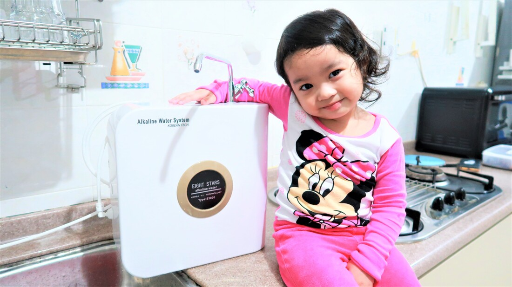
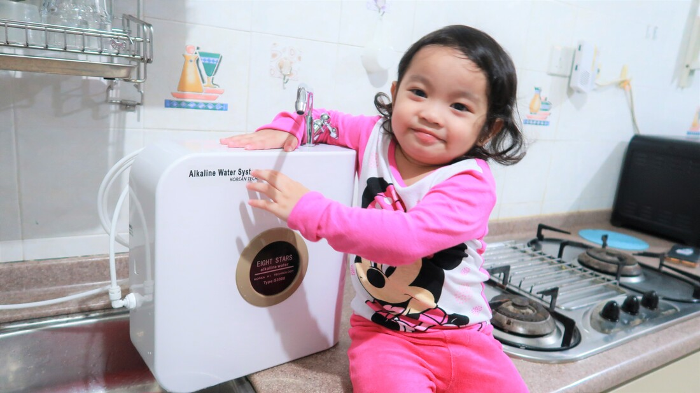
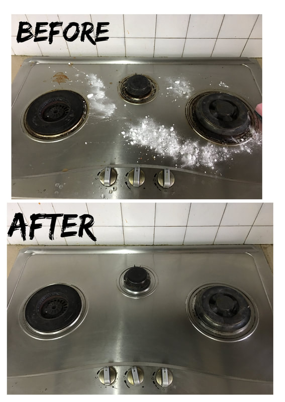
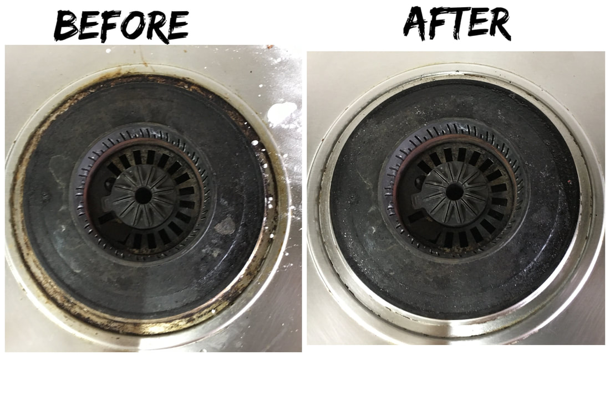
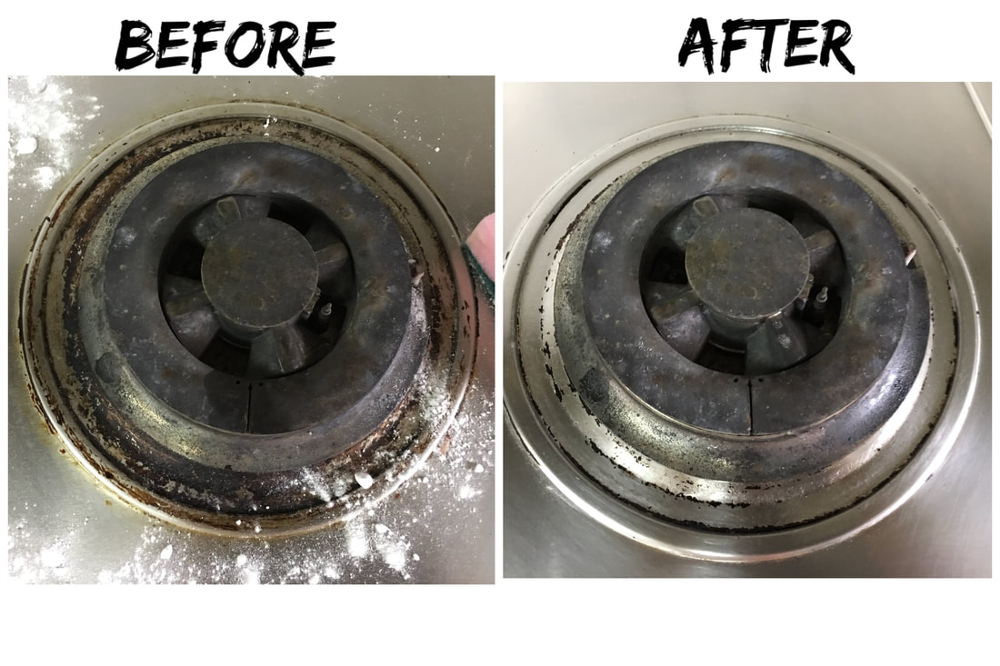
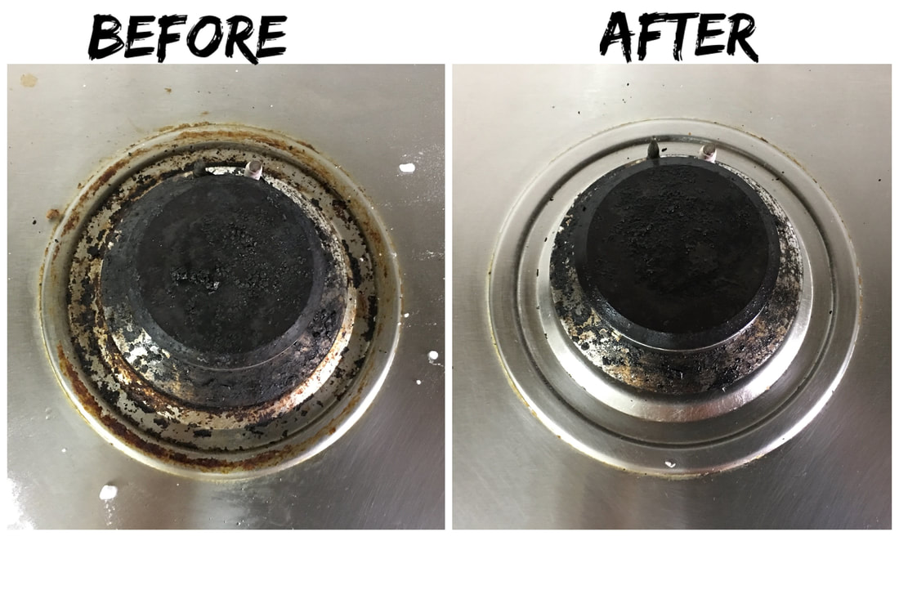

<?xml version="1.0" encoding="UTF-8"?>
<rss version="2.0" xmlns:content="http://purl.org/rss/1.0/modules/content/" xmlns:wfw="http://wellformedweb.org/CommentAPI/" xmlns:dc="http://purl.org/dc/elements/1.1/" >

<channel><title><![CDATA[When God Made You - Homemaking]]></title><link><![CDATA[https://whengodmadeyou.weebly.com/homemaking]]></link><description><![CDATA[Homemaking]]></description><pubDate>Thu, 14 May 2026 05:15:06 +0800</pubDate><generator>Weebly</generator><item><title><![CDATA[Received Free Alkaline Water System by Eight Stars Alkaline System]]></title><link><![CDATA[https://whengodmadeyou.weebly.com/homemaking/received-free-alkaline-water-system-by-eight-stars-alkaline-system]]></link><comments><![CDATA[https://whengodmadeyou.weebly.com/homemaking/received-free-alkaline-water-system-by-eight-stars-alkaline-system#comments]]></comments><pubDate>Sun, 15 Sep 2019 16:00:00 GMT</pubDate><category><![CDATA[Uncategorized]]></category><guid isPermaLink="false">https://whengodmadeyou.weebly.com/homemaking/received-free-alkaline-water-system-by-eight-stars-alkaline-system</guid><description><![CDATA[ 	 		 			 				 					 						          					 								 					 						          					 							 		 	   "Great News to share!I had received a Free Alkaline Fitration machine sent to my home today. It is suitable for any family because It&rsquo;s a powerful antioxidant, detoxify body and boost immune system. Only available for limited candidates to try out in market.Just register using my link below and get them to send 1 unit to you. Feel free to fill in my name in that link to qualify!https://goo.gl/for [...] ]]></description><content:encoded><![CDATA[<div><div class="wsite-multicol"><div class="wsite-multicol-table-wrap" style="margin:0 -15px;"> 	<table class="wsite-multicol-table"> 		<tbody class="wsite-multicol-tbody"> 			<tr class="wsite-multicol-tr"> 				<td class="wsite-multicol-col" style="width:50%; padding:0 15px;"> 					 						  <div><div class="wsite-image wsite-image-border-none " style="padding-top:10px;padding-bottom:10px;margin-left:0;margin-right:0;text-align:center"> <a>  </a> <div style="display:block;font-size:90%"></div> </div></div>   					 				</td>				<td class="wsite-multicol-col" style="width:50%; padding:0 15px;"> 					 						  <div><div class="wsite-image wsite-image-border-none " style="padding-top:10px;padding-bottom:10px;margin-left:0;margin-right:0;text-align:center"> <a>  </a> <div style="display:block;font-size:90%"></div> </div></div>   					 				</td>			</tr> 		</tbody> 	</table> </div></div></div>  <div class="paragraph"><font size="3">"Great News to share!</font><br /><font size="3">I had received a Free Alkaline Fitration machine sent to my home today. It is suitable for any family because It&rsquo;s a powerful antioxidant, detoxify body and boost immune system. Only available for limited candidates to try out in market.</font><br /><font size="3">Just register using my link below and get them to send 1 unit to you. Feel free to fill in my name in that link to qualify!</font><br /><font size="2">https://goo.gl/forms/7yztERS0BBKF4H5P2</font><br /><font size="2">https://www.facebook.com/photo.php?fbid=10214758558388628&amp;set=a.25815446</font><a href="https://www.facebook.com/photo.php?fbid=10214758558388628&amp;set=a.2581544628967&amp;type=3&amp;theater">28967&amp;type=3&amp;theater</a><br /><br />&#8203;Ito yung post ko sa Facebook account ko.&nbsp;<br /><br />Thank you kasi nakareceived kami ng free Alkaline Machine. So, nagtry lang ako na&nbsp; magsign up gamit ang link na nakita ko sa wall ng friend ko dito sa Singapore. After mga ilang araw, nakatanggap ako ng tawag. Pero dahil busy ako last month. HIndi ko mashado nakausap ng ayos. Kaya, netong September ko lang ulit nacontact. After ng usapan namin. Nagschedule siya ng installation.<br /><br />Yung machine ay free. Pero need bumili ng filters at may bayad ang Installation. Total price is 248sgd.&nbsp;<br /><br />I think worth the try naman.&nbsp;<br /><br />Ang plan ko is magkameron ako ng Ph test meter para macheck ko pa din if ok after 3 months siguro. Para incase man may abnormalities sa results ay makokontak ko sila to investigate and check.&nbsp;<br /><br /><font size="3">"<span style="color:rgb(35, 31, 32)">Despite the lack of proven scientific research, proponents of alkaline water still believe in its proposed health benefits. These include:</span></font><ul style="color:rgb(35, 31, 32)"><li><font size="3">anti-aging properties (via liquid antioxidants that absorb more quickly into the human body)</font></li><li><font size="3">colon-cleansing properties</font></li><li><font size="3">immune system support</font></li><li><font size="3">hydration, skin health, and other detoxifying properties</font></li><li><font size="3">weight loss</font></li><li><font size="3">cancer resistance</font></li></ul> <em><font size="3">&#8203;*https://www.healthline.com/health/food-nutrition/alkaline-water-benefits-risks#benefits*</font></em><br /><br />Thank you, Lord for this product. We pray na magamit ito ng ayos at&nbsp; magserve ng purpose.</div>]]></content:encoded></item><item><title><![CDATA["One Minute Rule" for a clutter free home]]></title><link><![CDATA[https://whengodmadeyou.weebly.com/homemaking/one-minute-rule-for-a-clutter-free-home]]></link><comments><![CDATA[https://whengodmadeyou.weebly.com/homemaking/one-minute-rule-for-a-clutter-free-home#comments]]></comments><pubDate>Sun, 14 Oct 2018 07:54:07 GMT</pubDate><category><![CDATA[Uncategorized]]></category><guid isPermaLink="false">https://whengodmadeyou.weebly.com/homemaking/one-minute-rule-for-a-clutter-free-home</guid><description><![CDATA[Isa ito sa mga habit na magagawa natin to stay organized kahit super busy tayo. Oops, speaking of pagiging busy, well busy sa kung anu-anong bagay. Honestly, kahit ako, minsan busy sa pag-iisip ng sunod-sunod na gagawin. Consequence ito kapag walang "To do list" na naihanda. Nakakafrustrate and overwhelming lalo na kapag nakita mong "tambak" ang gawain. Eh  kasi nga minsan, pagod na din tayo sa maghapon at wala ng energy na magdeclutter bago matulog. Kapag nangyayari ito sa akin, well hayun, bin [...] ]]></description><content:encoded><![CDATA[<div class="paragraph" style="text-align:left;">Isa ito sa mga habit na magagawa natin to stay organized kahit super busy tayo. Oops, speaking of pagiging busy, well busy sa kung anu-anong bagay. Honestly, kahit ako, minsan busy sa pag-iisip ng sunod-sunod na gagawin. Consequence ito kapag walang <strong><em>"To do list"</em></strong> na naihanda. <br /><br />Nakakafrustrate and overwhelming lalo na kapag nakita mong "tambak" ang gawain. Eh  kasi nga minsan, pagod na din tayo sa maghapon at wala ng energy na magdeclutter bago matulog. Kapag nangyayari ito sa akin, well hayun, binubulaga ako ng tambak na gawain sa umaga! Try natin 'tong<strong><em> "One Minute Rule".</em> </strong>Para iwas tambak ika nga!<br /><br />Isa ito sa practice na ginagawa ko na natutunan ko din sa vlog ni <strong><em>Cass of Clutterbug</em></strong> at sa pagbabasa about organizing. Perfect solution for those who struggle with procastination like me! Oh yes! Minsan ay dumadaan din ang katamaran sa katawan ko at lumalabas ang mga excuses. <br /><br />Tandaan natin ito kasi napakahalaga  din nito: <ul><li>Self -discipline</li><li>Creating a good habits! - laging paalala 'to sa akin ng asawa ko. </li></ul></div>  <div class="paragraph" style="text-align:center;"><em><font color="#5040ae" size="4">&ldquo;Habit is a cable; we weave a thread each day, and at last we cannot break it.&rdquo; &#8213;Horace Mann</font></em></div>  <div class="paragraph"><br />&#8203;Nagagamit ko 'to lalo kapag may nakita akonmg nakakalat na toys, pinagkainan na ilang piraso lang naman, at&nbsp; madami pa! Iniisip ko lagi na, <em><strong><font color="#5040ae">"Saglit lang ito"</font></strong>.</em> So, kapag nagawa ko na, napatunayan ko na saglit nga lang tapos ang saya sa pakiramdam kasi clutter-free na yung area na yoon, for example.&nbsp;</div>  <div class="paragraph"><br /><em><strong style="color:rgb(42, 42, 42)">&#8203;"One minute rule"</strong></em><span style="color:rgb(42, 42, 42)">&nbsp;is a simple trick na helpful kahit kanino actually.&nbsp; Ang target natin is&nbsp;</span><em style="color:rgb(42, 42, 42)"><strong>to get more done in less time.&nbsp;</strong></em><span style="color:rgb(42, 42, 42)">Yung tipong we won&rsquo;t even feel like you were working on it.</span><br /><br />Sabi nga, <em><strong><font color="#5040ae">"It takes less than a minute to do, do it right now".</font></strong></em> If it takes over a minute, you get a free pass. Table it to do later &mdash; write it on your to-do list.<a>&#8203;</a></div>]]></content:encoded></item><item><title><![CDATA[How to make time to declutter when you have toddler?]]></title><link><![CDATA[https://whengodmadeyou.weebly.com/homemaking/how-to-make-time-to-declutter-when-you-have-toddler]]></link><comments><![CDATA[https://whengodmadeyou.weebly.com/homemaking/how-to-make-time-to-declutter-when-you-have-toddler#comments]]></comments><pubDate>Wed, 19 Sep 2018 10:01:44 GMT</pubDate><category><![CDATA[Uncategorized]]></category><guid isPermaLink="false">https://whengodmadeyou.weebly.com/homemaking/how-to-make-time-to-declutter-when-you-have-toddler</guid><description><![CDATA[Hindi madali at depende sa toddler. Ramdam kita bes, lalo na at Stay-at -Home Mom na tayo. Kahit nga simpleng pagpunta sa toilet at pag-inom ng water eh minsan ay naneneglect na din. Pero paano pa 'yoong time para maglinis, magdeclutter at magorganize diba?Don't worry, talagang kung iisipin ay parang ang hirap pero kapag ginagawa na eh masaya din naman pala at syempre kaya naman!Sa journey na ito, minsan gusto niyang sumali sa paglilinis mo or kaya naman ay yayayain kang makipaglaro. Well, given [...] ]]></description><content:encoded><![CDATA[<div class="paragraph" style="text-align:left;">Hindi madali at depende sa toddler. Ramdam kita bes, lalo na at Stay-at -Home Mom na tayo. Kahit nga simpleng pagpunta sa toilet at pag-inom ng water eh minsan ay naneneglect na din. Pero paano pa 'yoong time para maglinis, magdeclutter at magorganize diba?<br /><br />Don't worry, talagang kung iisipin ay parang ang hirap pero kapag ginagawa na eh masaya din naman pala at syempre kaya naman!<br /><br />Sa journey na ito, minsan gusto niyang sumali sa paglilinis mo or kaya naman ay yayayain kang makipaglaro. Well, given na yan!<br /><br /><strong>1. Set an independent activity</strong><ul><li>For toddlers gaya ni Yanah, gamit na gamit ko ang simple crafting activity sa kaniya.</li><li>Need to search for play ideas for the week para ready ka parati at hindi maubusan ng ipapagawa sa toddler.</li><li>&#8203;Sa simula, sasamahan ko muna siya sa paglalaro hanggang sa ine-enjoy na niyang gawing mag-isa. Kapag busy na siya, go na! Tatakas na ako para makapagstart na ako ng dapat kong gawin.</li></ul> &#8203;&nbsp; &nbsp; &nbsp; &nbsp; <strong>&nbsp; &nbsp; &nbsp;Take note: </strong>dapat may schedule/to-do list. Simplehan mo lang. Start ka sa madali para may naacomplish ka agad. At ang sarap sa pakiramdam. Kesa sa magstart ka sa isang gawain na time consuming na agad. Naku, bes baka madismaya ka kapag hindi mo nagawa or natapos.&nbsp;<ul><li>Oops, dapat kita ko pa rin ang ginagawa niya.&#8203;&#8203; Mahirap na!</li></ul></div>  <div><div class="wsite-multicol"><div class="wsite-multicol-table-wrap" style="margin:0 -15px;"> 	<table class="wsite-multicol-table"> 		<tbody class="wsite-multicol-tbody"> 			<tr class="wsite-multicol-tr"> 				<td class="wsite-multicol-col" style="width:49.999999999999%; padding:0 15px;"> 					 						  <div><div class="wsite-image wsite-image-border-none " style="padding-top:10px;padding-bottom:10px;margin-left:0;margin-right:0;text-align:center"> <a>  </a> <div style="display:block;font-size:90%"></div> </div></div>   					 				</td>				<td class="wsite-multicol-col" style="width:49.999999999999%; padding:0 15px;"> 					 						  <div><div class="wsite-image wsite-image-border-none " style="padding-top:10px;padding-bottom:10px;margin-left:0;margin-right:0;text-align:center"> <a>  </a> <div style="display:block;font-size:90%"></div> </div></div>   					 				</td>			</tr> 		</tbody> 	</table> </div></div></div>  <div><div class="wsite-multicol"><div class="wsite-multicol-table-wrap" style="margin:0 -15px;"> 	<table class="wsite-multicol-table"> 		<tbody class="wsite-multicol-tbody"> 			<tr class="wsite-multicol-tr"> 				<td class="wsite-multicol-col" style="width:33.333333333333%; padding:0 15px;"> 					 						  <div><div class="wsite-image wsite-image-border-none " style="padding-top:10px;padding-bottom:10px;margin-left:0;margin-right:0;text-align:center"> <a>  </a> <div style="display:block;font-size:90%"></div> </div></div>   					 				</td>				<td class="wsite-multicol-col" style="width:33.333333333333%; padding:0 15px;"> 					 						  <div><div class="wsite-image wsite-image-border-none " style="padding-top:10px;padding-bottom:10px;margin-left:0;margin-right:0;text-align:center"> <a>  </a> <div style="display:block;font-size:90%"></div> </div></div>   					 				</td>				<td class="wsite-multicol-col" style="width:33.333333333333%; padding:0 15px;"> 					 						  <div><div class="wsite-image wsite-image-border-none " style="padding-top:10px;padding-bottom:10px;margin-left:0;margin-right:0;text-align:center"> <a>  </a> <div style="display:block;font-size:90%"></div> </div></div>   					 				</td>			</tr> 		</tbody> 	</table> </div></div></div>  <div><div class="wsite-multicol"><div class="wsite-multicol-table-wrap" style="margin:0 -15px;"> 	<table class="wsite-multicol-table"> 		<tbody class="wsite-multicol-tbody"> 			<tr class="wsite-multicol-tr"> 				<td class="wsite-multicol-col" style="width:33.333333333333%; padding:0 15px;"> 					 						  <div><div class="wsite-image wsite-image-border-none " style="padding-top:10px;padding-bottom:10px;margin-left:0;margin-right:0;text-align:left"> <a>  </a> <div style="display:block;font-size:90%"></div> </div></div>   					 				</td>				<td class="wsite-multicol-col" style="width:33.333333333333%; padding:0 15px;"> 					 						  <div><div class="wsite-image wsite-image-border-none " style="padding-top:10px;padding-bottom:10px;margin-left:0;margin-right:0;text-align:center"> <a>  </a> <div style="display:block;font-size:90%"></div> </div></div>   					 				</td>				<td class="wsite-multicol-col" style="width:33.333333333333%; padding:0 15px;"> 					 						  <div><div class="wsite-image wsite-image-border-none " style="padding-top:10px;padding-bottom:10px;margin-left:0;margin-right:0;text-align:center"> <a>  </a> <div style="display:block;font-size:90%"></div> </div></div>   					 				</td>			</tr> 		</tbody> 	</table> </div></div></div>  <div><div class="wsite-image wsite-image-border-none " style="padding-top:10px;padding-bottom:10px;margin-left:0;margin-right:0;text-align:center"> <a>  </a> <div style="display:block;font-size:90%"></div> </div></div>  <div class="paragraph" style="text-align:left;"><br /><strong style="color:rgb(42, 42, 42)">2. Use Messenger or cctv para macheck mo pa din si baby habang may ginagawa ka.</strong><ul style="color:rgb(42, 42, 42)"><li>Okey lang kahit walang cctv sa bahay! Kung may spare kang gadget, gamitin mo! Dalawa ang device ko (iphone and ipad). Gagamitin kong pangtawag ang isang device through that makikita ko siya.</li></ul><br /><strong style="color:rgb(42, 42, 42)">3. Game na! Work na while busy pa ang bata</strong><ul style="color:rgb(42, 42, 42)"><li>Minsan dinadala ko ang&nbsp;mga gagawin ko kung nasaan siya. Pero teka ha, the area you are decluttering must be safe for your child to be in.</li><li>#momguilt. Ay oo! minsan parang maguguilty ka kasi imbes na nakikipaglaro ka eh naglilinis ka. So, habang naglilinis ka, oppurtunity 'yan to teach them! Kunwari may hawak ka, pwedeng iintroduce mo sa kaniya kung anong tawag doon, saan ginagamit, paano gamitin. Maamaze ka na lang kasi tanda niya yun next time tanungin mo siya,</li><li><span style="color:rgb(41, 41, 41)">Isipin mo na lang na ang&nbsp;&nbsp;oras na nilalaan mo while managing your clutter ay worth it! Kasi once settled na. Konti na lang ang time na magagamit mo sa paglilnis at more on organizing na lang. Promise, kaya ng 10 mins ang linisin kada area. </span></li></ul><br /><strong style="color:rgb(42, 42, 42)">4. Mini- malist in the making</strong><ul style="color:rgb(42, 42, 42)"><li>Kapag nanawa na siya sa nilalaro niya, wala tayong magagawa diyan kundi isali siya sa ginagawa mo.</li><li>Kagaya ni Yanah who can follow simple instructions. Let's ask them!</li><li>Okay&nbsp;lang na sumali siya minsan at macurious sa ginagawa ng mommy. Nakakamazed makita na minsan nakuha din siya ng sarili niyang basahan at nakikipunas. It is awesome for little ones to learn by watching and helping as we go about our daily activities. They are at &ldquo;little sponge&rdquo; age where they are learning from us&nbsp;so much more than we realize! Let's take advantage of it and use it as an opportunity for us&nbsp;to model daily practices and rituals.</li></ul></div>  <div><div class="wsite-image wsite-image-border-none " style="padding-top:10px;padding-bottom:10px;margin-left:0px;margin-right:0px;text-align:center"> <a>  </a> <div style="display:block;font-size:90%">April 21, 2018 Nagulat ako kasi lahat ng gamit na makita niya sa bed eh pinaglalagay at pilit pagkasiyahin sa cabinet niya.  </div> </div></div>  <div><div class="wsite-multicol"><div class="wsite-multicol-table-wrap" style="margin:0 -15px;"> 	<table class="wsite-multicol-table"> 		<tbody class="wsite-multicol-tbody"> 			<tr class="wsite-multicol-tr"> 				<td class="wsite-multicol-col" style="width:50%; padding:0 15px;"> 					 						  <div><div class="wsite-image wsite-image-border-none " style="padding-top:10px;padding-bottom:10px;margin-left:0px;margin-right:0px;text-align:center"> <a>  </a> <div style="display:block;font-size:90%">Oops. kakalaba ko lang mga damit niya at need ko ng i-fold. Eh gusto lahat ng mahawakan niya ay isuot sa kanya. </div> </div></div>   					 				</td>				<td class="wsite-multicol-col" style="width:50%; padding:0 15px;"> 					 						  <div><div class="wsite-image wsite-image-border-none " style="padding-top:10px;padding-bottom:10px;margin-left:0px;margin-right:0px;text-align:center"> <a>  </a> <div style="display:block;font-size:90%">nakikitulong siya sa pag-sosort ng mga damit.</div> </div></div>   					 				</td>			</tr> 		</tbody> 	</table> </div></div></div>  <div><div class="wsite-multicol"><div class="wsite-multicol-table-wrap" style="margin:0 -15px;"> 	<table class="wsite-multicol-table"> 		<tbody class="wsite-multicol-tbody"> 			<tr class="wsite-multicol-tr"> 				<td class="wsite-multicol-col" style="width:33.333333333333%; padding:0 15px;"> 					 						  <div><div class="wsite-image wsite-image-border-none " style="padding-top:10px;padding-bottom:10px;margin-left:0px;margin-right:0px;text-align:center"> <a>  </a> <div style="display:block;font-size:90%">pilit kinukha sa akin ang mop</div> </div></div>   					 				</td>				<td class="wsite-multicol-col" style="width:33.333333333333%; padding:0 15px;"> 					 						  <div><div class="wsite-image wsite-image-border-none " style="padding-top:10px;padding-bottom:10px;margin-left:0px;margin-right:0px;text-align:center"> <a>  </a> <div style="display:block;font-size:90%">Thank you for helping mommy!</div> </div></div>   					 				</td>				<td class="wsite-multicol-col" style="width:33.333333333333%; padding:0 15px;"> 					 						  <div><div class="wsite-image wsite-image-border-none " style="padding-top:10px;padding-bottom:10px;margin-left:0;margin-right:0;text-align:center"> <a>  </a> <div style="display:block;font-size:90%"></div> </div></div>   					 				</td>			</tr> 		</tbody> 	</table> </div></div></div>  <div><div class="wsite-image wsite-image-border-none " style="padding-top:10px;padding-bottom:10px;margin-left:0px;margin-right:0px;text-align:center"> <a>  </a> <div style="display:block;font-size:90%">Pilit niyang pinupush ang storage box na yan! nakikita siguro sa mommy. Minsan nakikitulong pa sa pag-pupush ng sofa. </div> </div></div>  <div class="paragraph" style="text-align:left;"><strong style="color:rgb(42, 42, 42)">5. Nap time</strong><ul style="color:rgb(42, 42, 42)"><li>Hayan, ang saya ko na kapag nakatulog na siya. Diyan ko pedeng gawin ng "mabilisan" ang mga dapat kong gawin na hindi pwedeng andiyan sha. Yes, speed cleaning is a good practice! Set an alarm! Feeling mo may challenge ka na need mo manalo kasi nakatimer! LOL</li></ul><br /><strong style="color:rgb(42, 42, 42)">6. Paggising ng maaga</strong><ul style="color:rgb(42, 42, 42)"><li>Hanggang ngayon prinapractice ko pa din ang sarili ko na maaga gumising. Para ready na ang food. Baon ni daddy at food namin ni Yanah. Minsan naglututo na din ako ng para sa next day!</li><li>Hanggat maaari ay malinis ko na din ang Play area niya. Kung hindi man ako nakapag-mop ng gabi, it's time to mop bago pa magising ang bata. </li><li>Time ko din linisin ang water bottle, milk bottle at mag-chop ng ingredients. Ang hirap kapag nagising na siya. Ayaw niya makita ang mommy niya na nasa kusina. Eh kung ready na ang ingredients, konting iyak lang,, drop lang ng drop ng ingredients. Kahit nakababy wear eh oks lang! Keribels na. Kaso, need kong magset ng timer. Minsan nakakalimutan ko na nagluluto pala ako. </li></ul><br /><strong style="color:rgb(42, 42, 42)">7. After bedtime</strong><ul style="color:rgb(42, 42, 42)"><li>Time ko 'to para mag-plantsa ng damit, magset ng schedule  for the next day at makipagkwentuhan sa daddy</li><li>Time to declutter na din, magtapon ng basura (usually ang daddy na ang bahala dito) and mop ng floor (hanggat maari, dalawang beses sa isang araw o kaya as necessary)</li></ul><br /><strong style="color:rgb(42, 42, 42)">8. Get Help</strong><ul style="color:rgb(42, 42, 42)"><li>Okey lang humingi ng tulong. Naglipat bahay kami at saktong bumisita ang parents ko. Nagkasakit si Yanah. So may nakatulong ako. Thank you, Lord! Blessing talaga na andiyan sila. </li><li>Kapag may mga naiwan pa akong tasks, si Daddy na niya ang bahala kay Yanah pagdating from work. Napunta sila sa labas para ipasyal si Yanah. O kaya naman habang may ginagawa ako eh siya na bahala magpaligo kay Yanah. O kaya naman &ldquo;me time&rdquo; ko na din para makaligo at malinis ang bathroom. Hehe</li><li>Si Daddy din ang bahala sa hugasin sa gabi. Yey!</li></ul><br />Kaya natin 'to mga momshies. Sa simula parang ang hirap pero kaya naman! God will equip us. Sa pagdaan ng mga araw parang ang dali na lang kasi may system ka na. May routines na :) Possible na may sarili ka ding paraan. <br /><br />Bagong bagay 'to sa atin. Dati kayo lang ni Hubby. Ngayon iba na kasi may isang munting atay na nakadepende sa atin.<br /><br />Ang sarap sa pakiramdam lalo na at may naacomplish tayo. </div>]]></content:encoded></item><item><title><![CDATA[Let's delcutter and organize!]]></title><link><![CDATA[https://whengodmadeyou.weebly.com/homemaking/lets-delcutter-and-organize]]></link><comments><![CDATA[https://whengodmadeyou.weebly.com/homemaking/lets-delcutter-and-organize#comments]]></comments><pubDate>Wed, 19 Sep 2018 08:47:58 GMT</pubDate><category><![CDATA[Uncategorized]]></category><guid isPermaLink="false">https://whengodmadeyou.weebly.com/homemaking/lets-delcutter-and-organize</guid><description><![CDATA["A clean and organized home leads to a simpler lifestyle. Even for the simple fact that you finally know where everything is! "Laging may nawawala.&nbsp;Oh my! Isa 'to sa mga struggle ko eversince. Yung tipong alam ko namang itinabi ko. Kaso kapag hanapan na ay hindi na makita. Hindi ko na maalala kung saan ko naitabi gaya ng suklay. LOL! Relate ba or ako lang ang ganito?Thank you sa Pinterest at Youtube: At dahil sa pagkahilig&nbsp; ko sa mga DIYs! Nakilala ko si Cassandra of Clutterbug. Simula [...] ]]></description><content:encoded><![CDATA[<div class="paragraph" style="text-align:left;"><em><font color="#ae40a5" size="4">"A clean and organized home leads to a simpler lifestyle. Even for the simple fact that you finally know where everything is! "</font></em><br /><br /><em><strong><font color="#8640ae">Laging may nawawala.</font><font color="#ae40a5">&nbsp;</font></strong></em>Oh my! Isa 'to sa mga struggle ko eversince. Yung tipong alam ko namang itinabi ko. Kaso kapag hanapan na ay hindi na makita. Hindi ko na maalala kung saan ko naitabi gaya ng suklay. LOL! Relate ba or ako lang ang ganito?<br /><br /><font color="#8640ae"><em><strong>Thank you sa Pinterest at Youtube:</strong></em> </font>At dahil sa pagkahilig&nbsp; ko sa mga DIYs! Nakilala ko si <strong><font color="#5040ae">Cassandra of Clutterbug.</font> </strong>Simula noon, pinanood ko na ang mga vlogs niya. Mayroon siya sa youtube at sumali ako sa kanyang group sa Facebook. Nakilala ko din ang iba pang vlogger sa decluttering.<br /><br /><em><strong><font color="#8640ae">Iinspire ang sarili araw-araw</font><font color="#5040ae">. </font></strong></em>&nbsp;Ang saya nitong gawin! Kapag feeling ko ay tinatamad akong gumawa. Ang gagawin ko is manonood ako ng vlogs habang naglilinis. Hanggang sa hindi ko na namamalayan ay nakakadami na ako ng ginagawa. Yung group na <strong><font color="#5040ae">"Organizing Advice for Clutterbug</font></strong>" at youtube ang naging motivation ko at inspiration ko sa journey na'to.<br /><br /><strong><em><font color="#8640ae">Ayaw maglinis, so start organizing!&nbsp;</font></em></strong>&nbsp;Syempre ayaw naman natin na buong araw na lang ay hawak natin ang walis at dustpan. Ngayon pang may munting batang naghihintay sa atin at gusto makipaglaro. Ang&nbsp; isa sa mga hindi ko makakalimutan na sinabi niya is <strong>ayaw daw n'ya talagang maglinis. So, ang key is to ORGANIZE </strong>but need na magdeclutter!<br /><br /><em><strong><font color="#8640ae">Purge it!&nbsp;</font></strong></em>Kailangang i-purge ang mga bagay na hindi na ginagamit. Aminado pa man din ako na may pagka-hoarder&nbsp;din&nbsp; ako. Ayaw ko magtapon ng boxes, mga bote atbp. Feeling ko kasi ay baka magamit ko pa at magkatime ako sa crafting. Well, ilang taon na din ang nakakalipas. Kaya need ko ng i-purge. Masyado ng nag-aacumulate at nawawalan na ng space sa bahay.&nbsp;<br /><br />I started since February 2018. In time din kasi lilipat kami ng house. But dahil madaming mga nangyari at kulang sa oras. Nadala pa din namin sa bagong apartment and mga "clutter".&nbsp;<br /><br /><strong><font color="#8640ae">Araw-araw na purging.&nbsp; </font></strong>Ay oo! on going pa din ang pagdedeclutter ko at pag-pupurge ng mga hindi na nakaka-add ng value sa bahay namin.&nbsp;<br /><br />Ang saya ng journey na' to! Ito din ang nakapaglead sakin sa advocacy about minimalism.&nbsp;<br /><br />Ang sarap mang-inspire ng ibang mommies to do the same. Ramdan ko ang hirap kapag stay at home mom ka na. Kailangan ng "System" at "routine". Yung struggle na&nbsp; gusto mong maglinis pero need mo ding attendan ang need ng baby mo.&nbsp;<br /><br />Tara na sa journey na 'to!&nbsp;<br /></div>]]></content:encoded></item><item><title><![CDATA[Amazing Cleaner: Baking Soda and Vinegar]]></title><link><![CDATA[https://whengodmadeyou.weebly.com/homemaking/amazing-cleaner-baking-soda-and-vinegar]]></link><comments><![CDATA[https://whengodmadeyou.weebly.com/homemaking/amazing-cleaner-baking-soda-and-vinegar#comments]]></comments><pubDate>Sun, 29 Apr 2018 16:00:00 GMT</pubDate><category><![CDATA[Uncategorized]]></category><guid isPermaLink="false">https://whengodmadeyou.weebly.com/homemaking/amazing-cleaner-baking-soda-and-vinegar</guid><description><![CDATA[At dahil iniiwasan ko na ang paggamit ng mga commercial cleaning products, trinay kong gamitin ang baking soda and vinegar! Environmentally friendly ingredients na super effective!Nakakalungkot kasi yung kalimitang available na nabibili natin na panglinis ay super tapang, delikado sa atin pati na din sa environment.&nbsp;Dahil diyan, may stock ako na baking soda at vinegar sa bahay. Mura lang siya at binili ko lang&nbsp; sa Value Dollar.&nbsp; Wala aking idea kung magkano sa Pinas ang baking sod [...] ]]></description><content:encoded><![CDATA[<div class="paragraph">At dahil iniiwasan ko na ang paggamit ng mga commercial cleaning products, trinay kong gamitin ang baking soda and vinegar! Environmentally friendly ingredients na super effective!<br /><br />Nakakalungkot kasi yung kalimitang available na nabibili natin na panglinis ay super tapang, delikado sa atin pati na din sa environment.&nbsp;<br /><br />Dahil diyan, may stock ako na baking soda at vinegar sa bahay. Mura lang siya at binili ko lang&nbsp; sa Value Dollar.&nbsp; Wala aking idea kung magkano sa Pinas ang baking soda.&nbsp;<br /><br />Nalalapit na din ang aming paglipat ng bahay, todo linis ako para oks na oks kapag tinurnover namin sa mayari. Isa sa hinarap ko ay&nbsp; aming kitchen stove.<br /></div>  <div><div class="wsite-image wsite-image-border-none " style="padding-top:10px;padding-bottom:10px;margin-left:0;margin-right:0;text-align:center"> <a>  </a> <div style="display:block;font-size:90%"></div> </div></div>  <div><div class="wsite-image wsite-image-border-none " style="padding-top:10px;padding-bottom:10px;margin-left:0;margin-right:0;text-align:center"> <a>  </a> <div style="display:block;font-size:90%"></div> </div></div>  <div><div class="wsite-image wsite-image-border-none " style="padding-top:10px;padding-bottom:10px;margin-left:0;margin-right:0;text-align:center"> <a>  </a> <div style="display:block;font-size:90%"></div> </div></div>  <div><div class="wsite-image wsite-image-border-none " style="padding-top:10px;padding-bottom:10px;margin-left:0;margin-right:0;text-align:center"> <a>  </a> <div style="display:block;font-size:90%"></div> </div></div>  <div class="paragraph">Di ba! Ang saya! hindi ko na kailangan pakabrushin, effortless promise!<br />Try nyo na din!</div>]]></content:encoded></item></channel></rss>